Objectives
In this Exercise you will learn how to:
- Connect physical devices to Monitor
- Map device Physical Interfaces to Logical Interfaces
- Create realtime Rules and Actions on device events
- Understand how device data is stored
Before you begin:
This Exercise requires that you:
- Have completed the pre-requisites required for all labs
- Have a Nordic Thingy. This is how you purchase Nordic Thingy.
Connect a Physical Device
It’s time to connect a real, physical device. For this exercise you will use a Nordic Thingy. Learn more about the Nordic Thingy and its various sensors here
Connect Nordic Thingy to the Internet
Let’s connect the a Nordic Thingy to the internet using Google Chrome on your computer. We are using Google Chrome because it has a built in Bluetooth listener. Using the connectivity page below you can connect your Nordic Thingy device to the internet and the Maximo Asset Monitor Cloud Service. You first need to pair the Thingy via Bluetooth to your computer.
- Carefully remove the rubber overlay to find the power switch next to the micro-usb port. A blue light should illuminate when the device is powered up.
- Power on the Nordic Thingy. Push the tiny switch to the left of the micro-web port
- Use Bluetooth in the Google Chrome Browser to connect your device to the internet. Open a tab with this web address: https://nrf52t-v2.mybluemix.net/.
- This method will only work on Google Chrome as it has a built in Bluetooth listener. Below is the connectivity page you’ll need to revisit if you get disconnected at any point.
ClickConnectbutton. 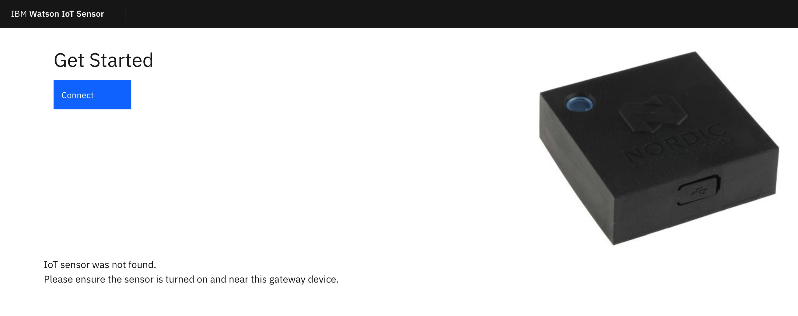 - In the list of devices, find the one matching your device, select it and click
Pair. You may need to rename the Thingy if you are in close range with others also using their own Thingy. 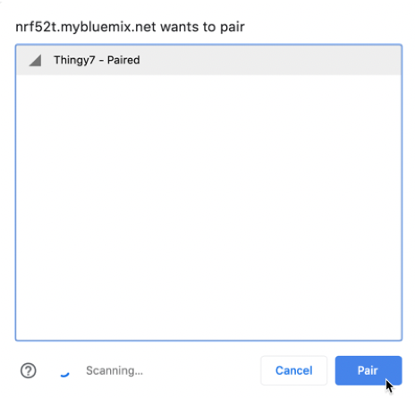 - Once paired, a form will pop up. The form's presence indicates that the Thingy is connected to your computer via Bluetooth. In order to connect the Thingy to the IoT Platform, we will need to obtain the information to fill in missing fields in the form. We will obtain this information in the next section.
Connect Nordic Thingy to Maximo Asset Monitor
The Nordic Thingy has connectivity to the internet. You must first register device types and then devices with the IoT Platform service included with Maximo Asset Manager before they can securely send and persist data there.
- Navigate to and bookmark the Maximo Asset Monitor Dashboard page.
You will use this throughout the Exercise: https://dashboard-beta.connectedproducts.internetofthings.ibmcloud.com/preauth?tenantid=Monitor-Demo
which will bring you to the Home screen - Log in to Maximo Asset Monitor. Click
Loginbutton. 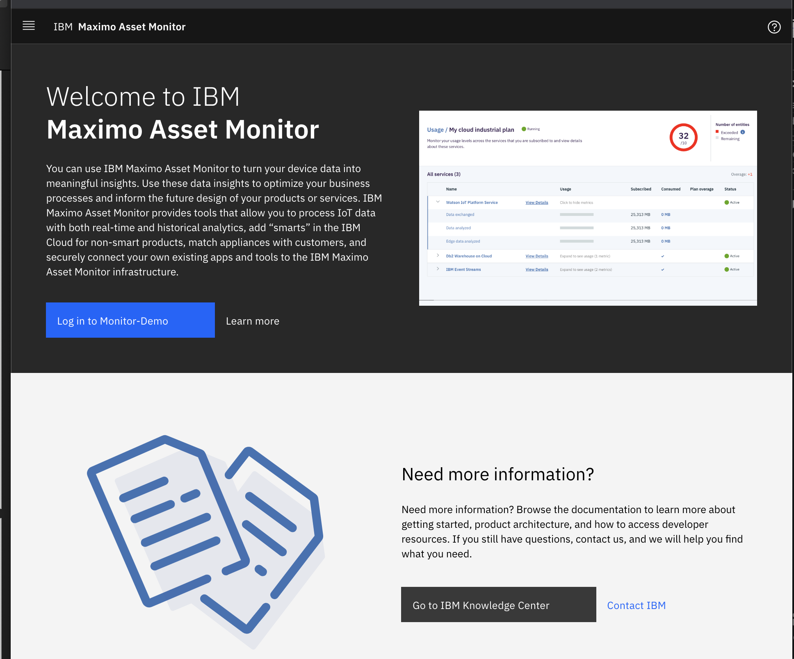 - After logging in, you’ll land in Home Screen. 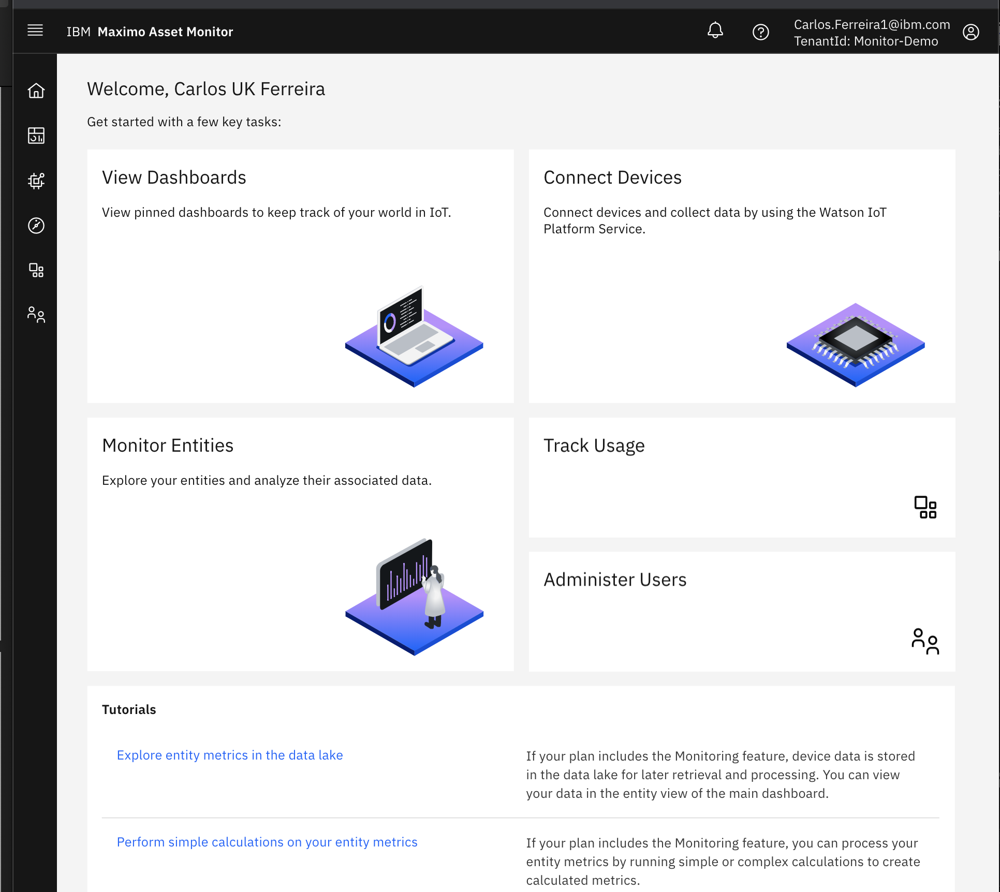
- Click
Servicestab in the left side menu 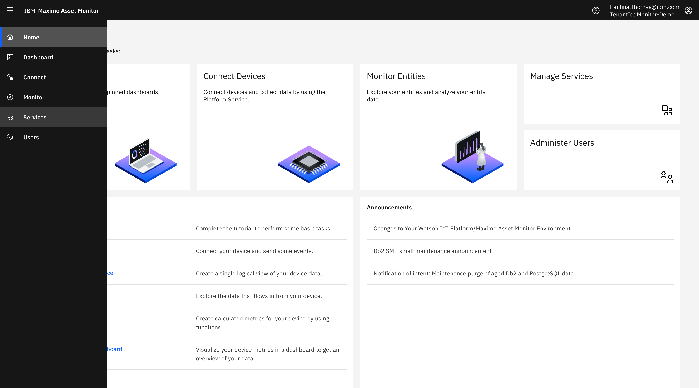 - Next to the
Watson IoT Platform Servicetitle, clickView Details. A new window will open. 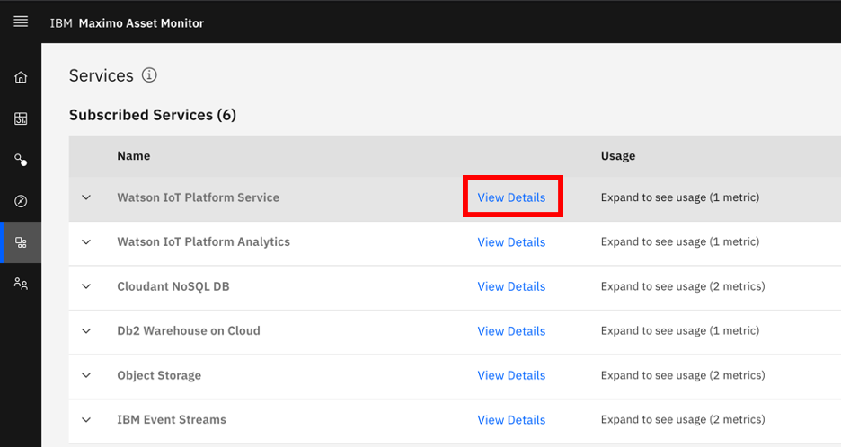 - Click
View More. Copy and paste the link of theHost URLinto a new tab in your browser
or simply pressLaunch(you might need to login in again with your IBM Id). 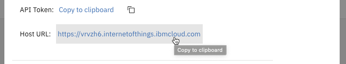 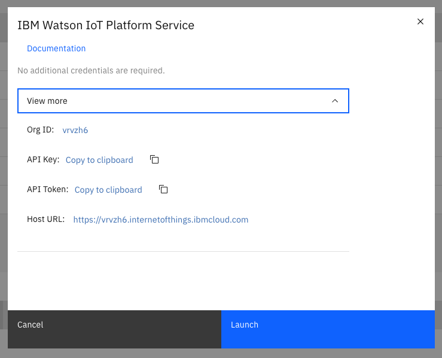 - A new page will open. Navigate to the
Device Typestab 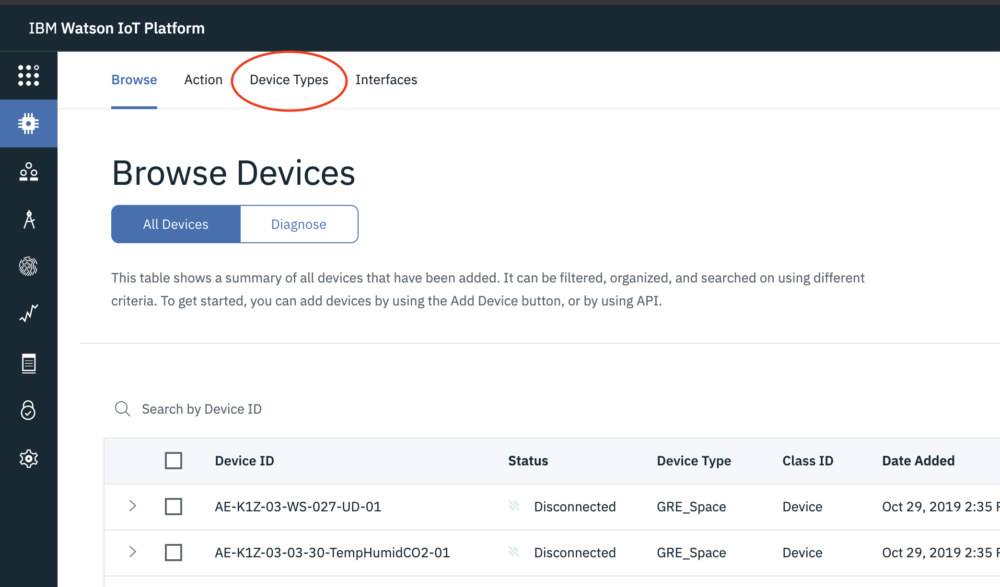 - Click
Add Device Typebutton in the top right corner. 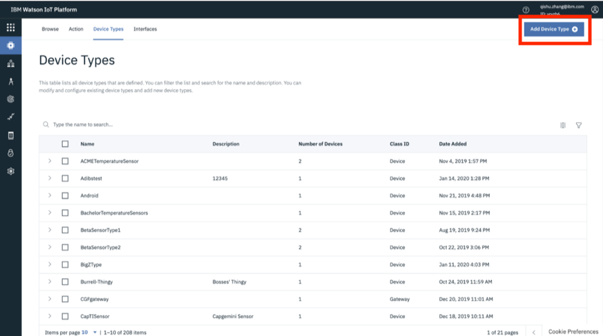 - Now create a new device type and name it
<your last name>_thingy. For example,smith_thingy.In the figures below, you will see that the device type name has a dash in it.
DO NOT PUT A DASH OR PERIOD IN YOUR DEVICE TYPE NAME.
There is an issue in Monitor right now where the pipeline will break if there is a dash or period in your device type name. 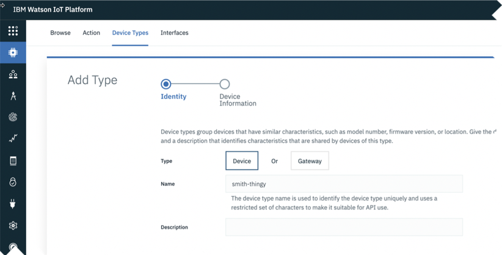
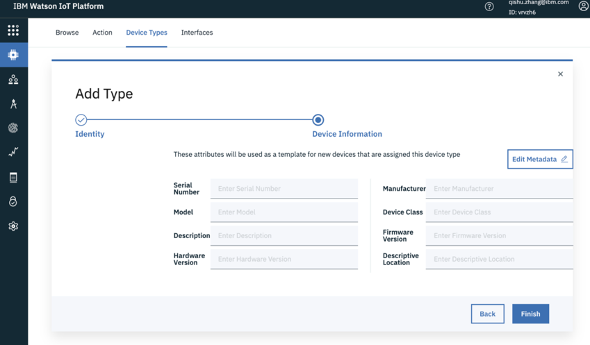 - Click
Nextuntil you get pastFinish. You’ve finished creating a device type. - Now you will register a new device using the
Device Typeyou just created. Make sure to name the device the same name as your Thingy from the earlier step. Navigate back to theBrowsetab andAdd Device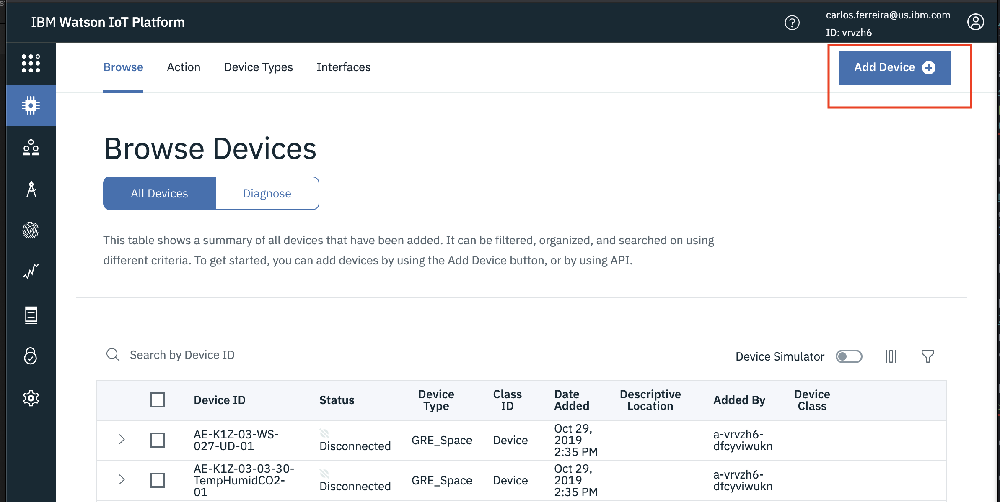 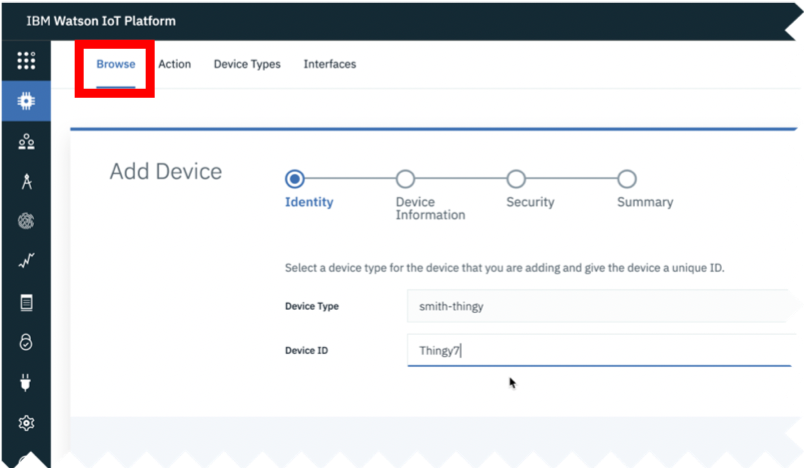 click Next until you reach Finish: 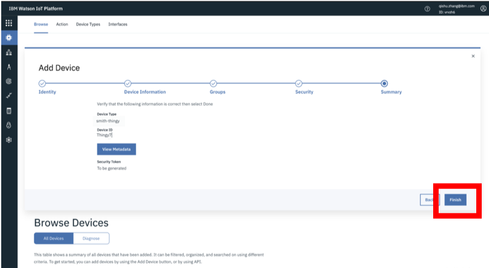 - Once you finish creating the device, make sure you copy and make note of the device credentials! Your device must provide device credentials to connect to the IOT Platform Service. 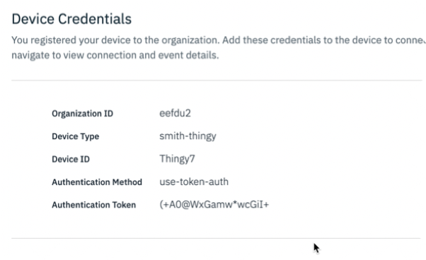
- A Nordic Thingy needs the IoT Platform tenant organization ID to connect to the IoT Platform Service. You can also find the
Org IDin the top right of the screen or the browser URL. Make note of theOrg IDfor use in the next step. 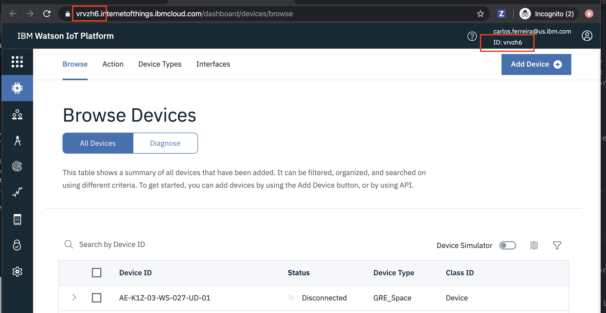 - Navigate back to the Thingy page within your Chrome Browser showing the sensor values and enter the
Organization ID, theDevice Type, theDevice ID, and theAuthorization Tokeninto the corresponding fields in the form. 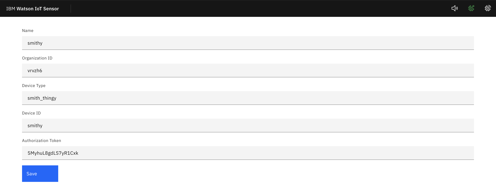 - Click the
Savebutton to write the token to the Thingy. You should see both the device connection and the IoT Platform service connection status indicators are green if successful. 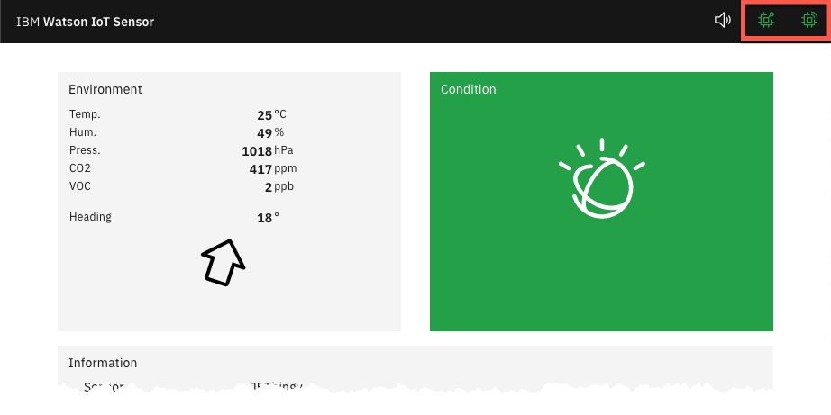 - You should also now see data flowing from the Thingy to your corresponding Device ID in the IoT Platform service back in the
Devicestab. 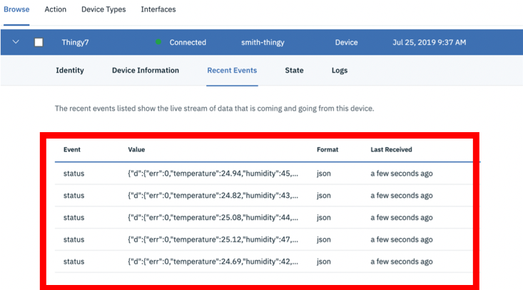 - Flip the Thingy upside down to create an error condition. It will beep and the light will turn red. Click on one of the rows to see the event payload in JSON format.
Notice theerrvalue in the payload changed to 1. 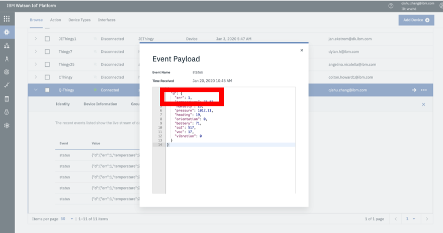 - Press the large black button on the top of the Thingy to clear the error.
Note: This exercise demonstrated how to manually add a device to Maximo Asset Monitor. You would most likely programatically add devices using the included Watson IOT Platform Service REST APIs and Python SDK.
Interfaces, Rules and Notifications
You will create an alert notification when the Nordic Thingy has an error condition. In this next section you will learn how you can:
- Create physical interfaces
- Create logical interfaces
- Define conditional realtime rules and notifications
Create a Physical Interface
- Make sure your Nordic Thingy is turned on and actively sending sensor data to the IoTP service. You may need to reconnect the Thingy in the Chrome browser using this web link and steps provided earlier.
- Check if the Thingy is connected. Click
Browsetab in the IoT Platform service and searching the devices list for device status and recent events. 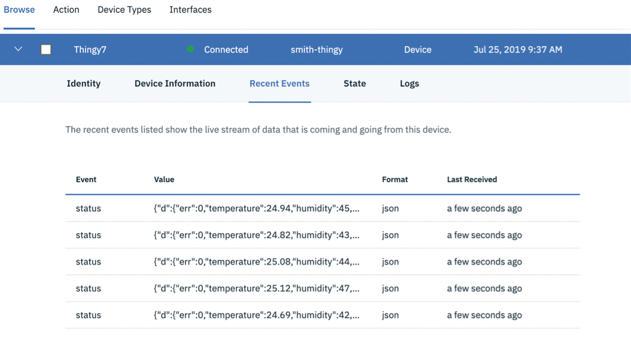 - Navigate to the
Device Typefor your Thingy and clickInterfacestab. Make sureAdvanced Flowis selected and clickCreate Physical Interfacebutton. 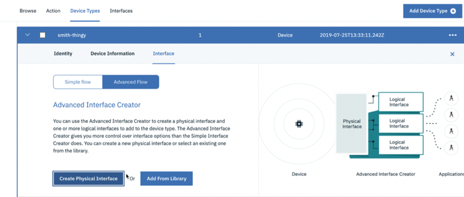 - Leave the default name for the physical interface and then click
Next. - Click
+ Create event typebutton on the next page. If your Nordic Thingy is still actively sending events, then you should see thestatusevent show up. - If the
statusevent does not automatically appear, check the connectivity back inBrowsein the device list. Selectstatusand then clickAdd. - Click
Doneto complete the creation of the physical interfaces. 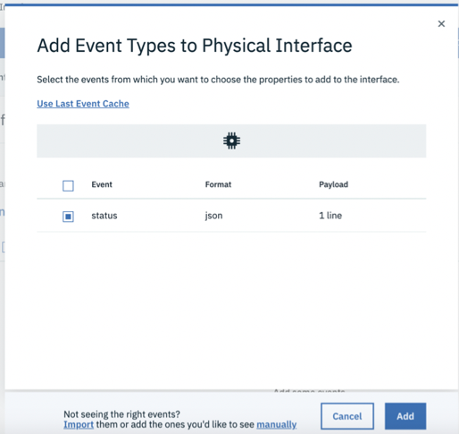
Create a Logical Interface
- Next, click
+ Create Logical Interfacebutton to begin creating the logical interface. Leave the default name as is and clickNext - Click
+ Add Propertybutton, expand thedand select and save theerrproperty. 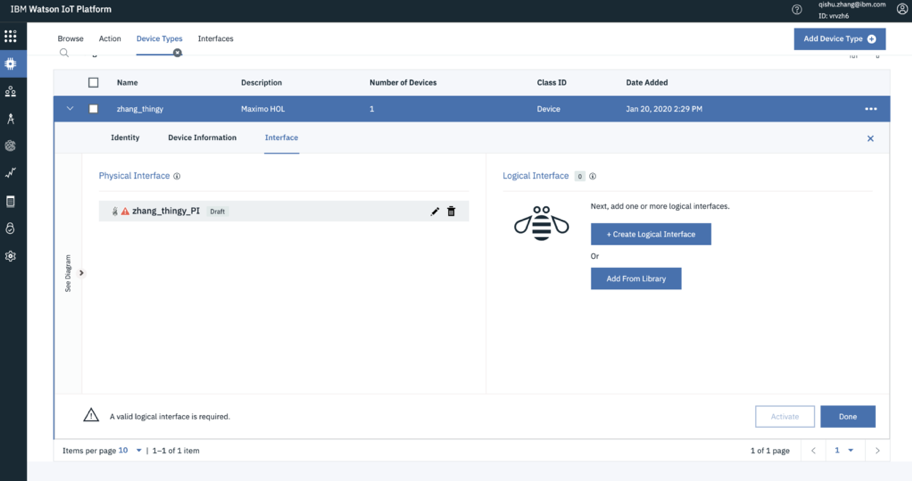 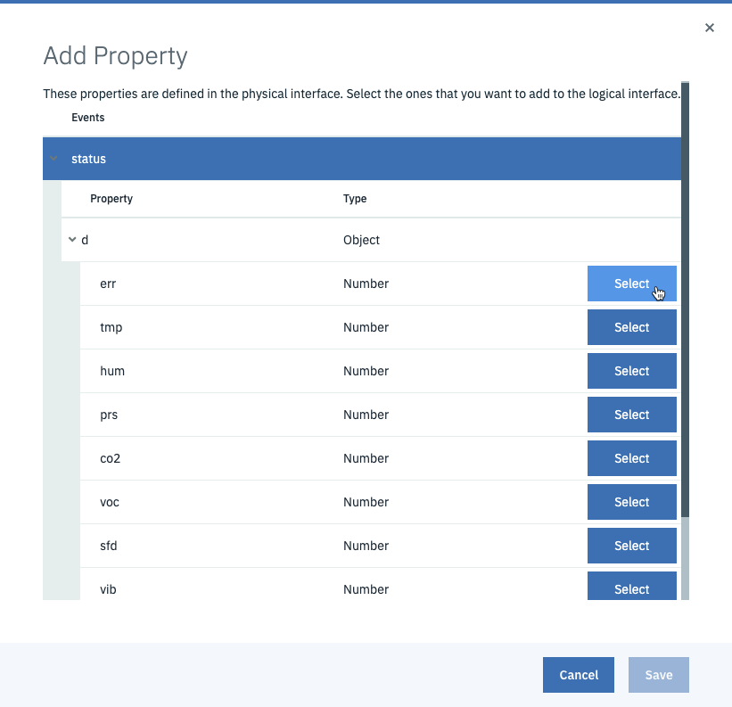 - Let’s do the same for “tmp”, except this time we’ll use the mapping field to convert the temperature from Celsius to Fahrenheit using JSONData script functions. Select
+ Add Property - Select
d.tmpand change the name totemperature - Then in the mapping field, click
pencilicon to edit - Add the following equation:
d.tmp * 1.8 + 32. Notice that to input the numbers1.8and32you have to first select theValueoperator. Another option is to switch theAdvanced Editorbutton and paste the formula. It may cause a syntax error if you mistype, so be careful. - Click
green checkmark when complete - Click
save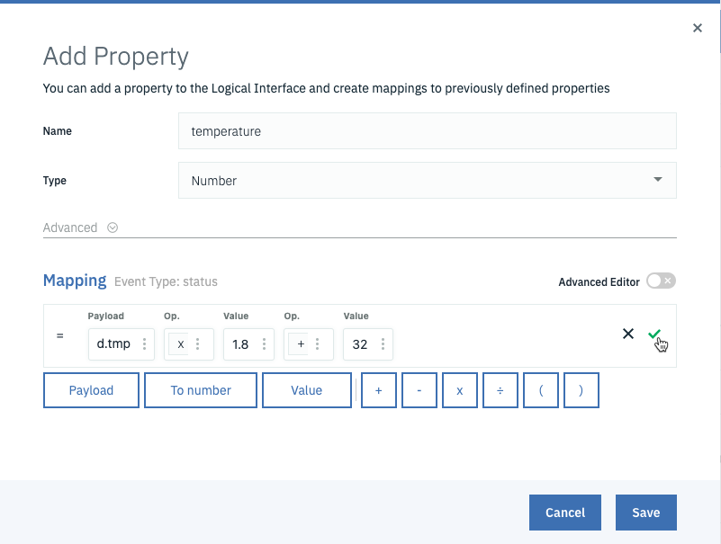 - Add the remaining properties with the names as shown below 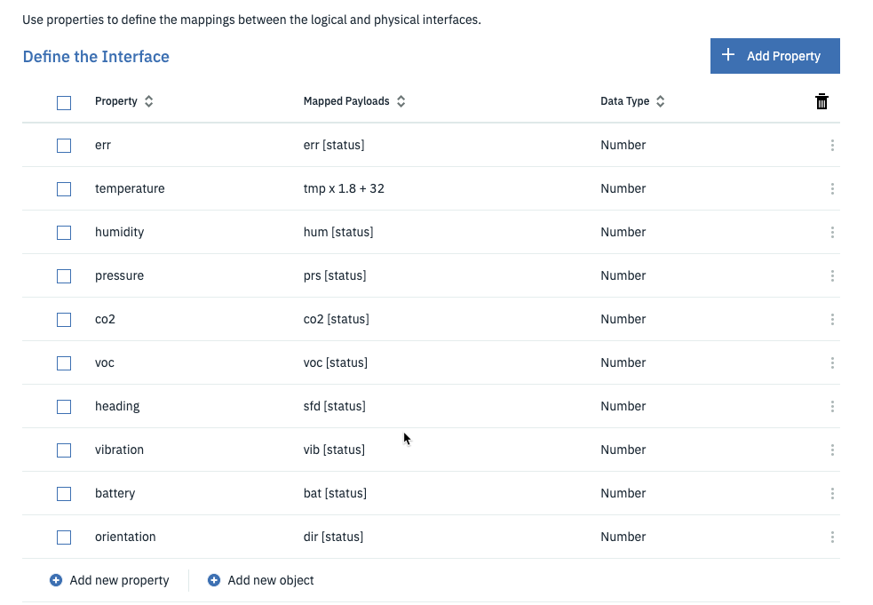
- Click
Nextto move ontoNotifications. Notifications allow you to take action when certain conditions occur. - Change the
State Update Notificationcriteria toState Changes.This will send data to your Logical interface only when the value changes. If you want to send the event all the time even when the values are the same as previous events selectAll events.
Click theXin the upper right corner to close this dialogue box and make sure to hit theApplybutton to save changes. 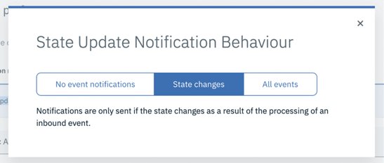
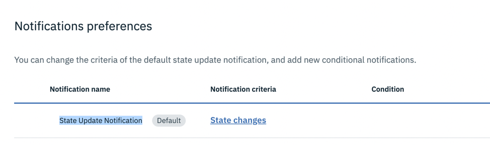 - Click
Add notification +button. This will raise a notification event in IoT Platform when the Thingy’s error condition is set to1 - Enter the Name, description, criteria and condition as shown below.
$state.err = 1 - Click
Apply - Click
Done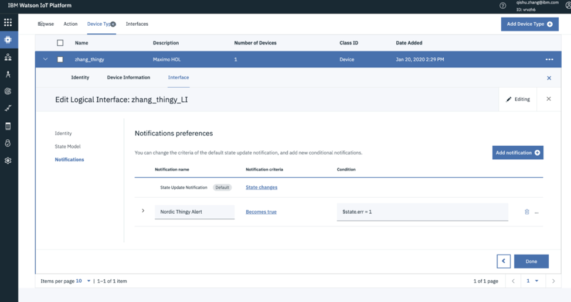 - The interface creation is almost complete. Back in the interface view, click
Activatebutton and activate the interfaces. If successful, you should see a green rocket ship icon next to each interface. 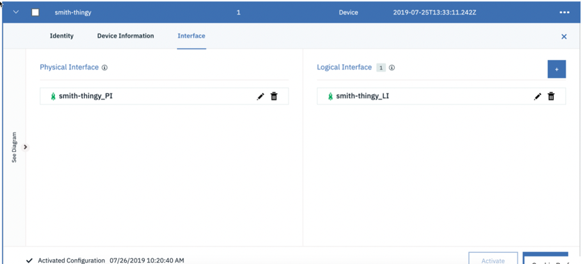 - You can check to see if your interface is working, by browsing to your device, select the
Statetab and switch the interface to your newly created interface. Temperature should now be shown in Fahrenheit. 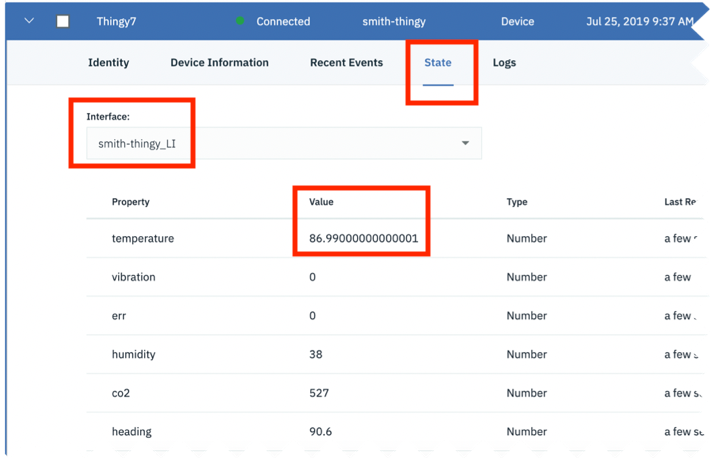
Store Data
This next exercise focuses on how and what database tables your device data is stored in. Make sure you have completed the earlier steps in this Exercise. You should already have a device type with an active physical and logical interface and at least one device of that type sending data.
- You can check if your device is connected and sending data through an interface by browsing devices in the IoT Platform service and checking your devices status, recent events and state. Look at logs tab for troubleshooting issues. You should see values update when look at the state interface. Make sure you Nordic Thingy is powered up and sending data through Chrome Bluetooth connection. 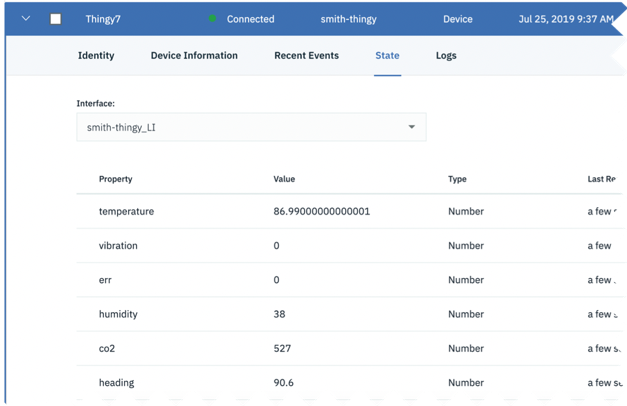
- Device data flows through a physical interface, transformed into a logical interface and stored in a time series database table within DB2 Warehouse called
IOT_<Device Type Name>. To see the table go back to the Maximo Asset Monitor window and click onServicesin the left menu. 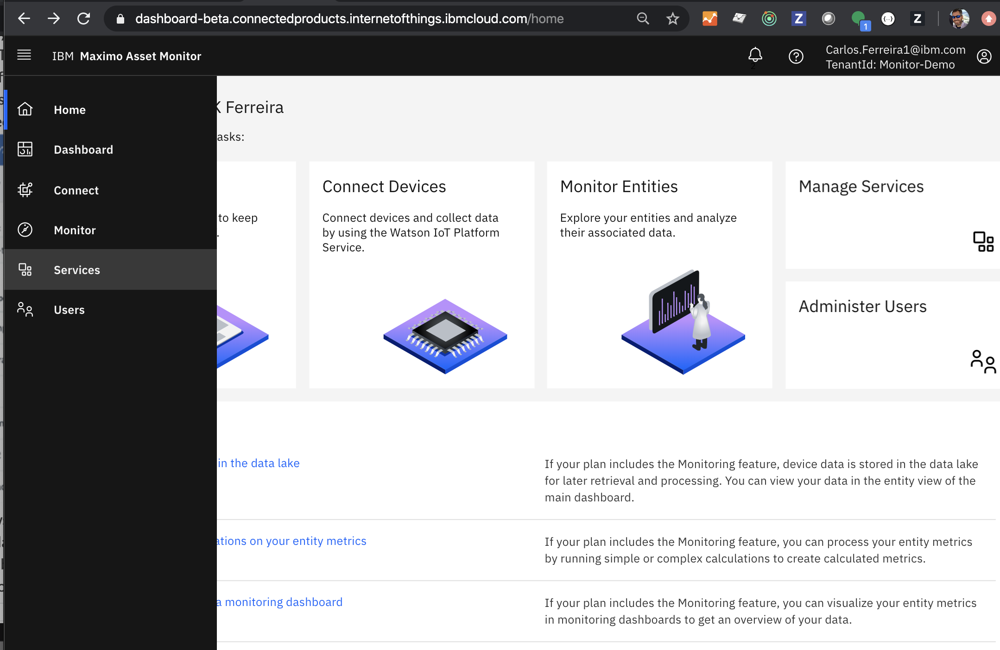 - Click
View Details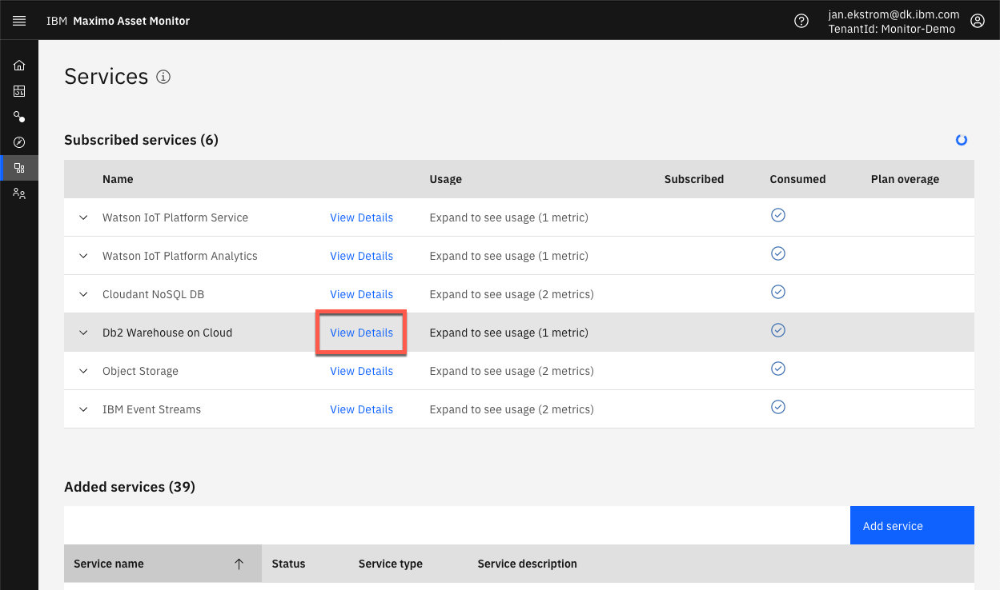
Note:
When you click on View Details, and you see fields that say admin only, then please contact an administrator on the account to give you the respective DB2 link, username, and password. If instead of DB2 Warehouse, your tenant uses PostgreSQL, download DBeaver and enter the information given in the View Details tab. More information on Maximo Asset Monitor and PostgreSQL can be found here.
- Next to Db2 Warehouse on Cloud, and click
Launch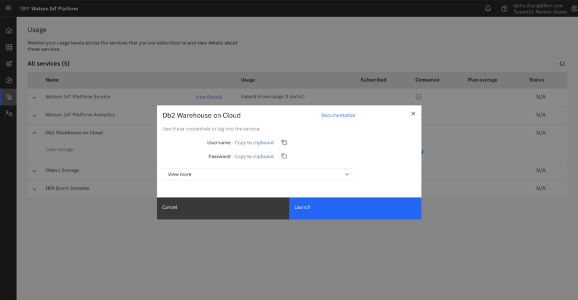 - The DB2 page opens in another tab. You may see a second sign in dialog labeled
Attentionto change your DB2 password. Ignore the second sign in dialog. - Copy and paste the
usernameandpasswordfrom theView Detailswindow into the Db2 login page and pressSign in. 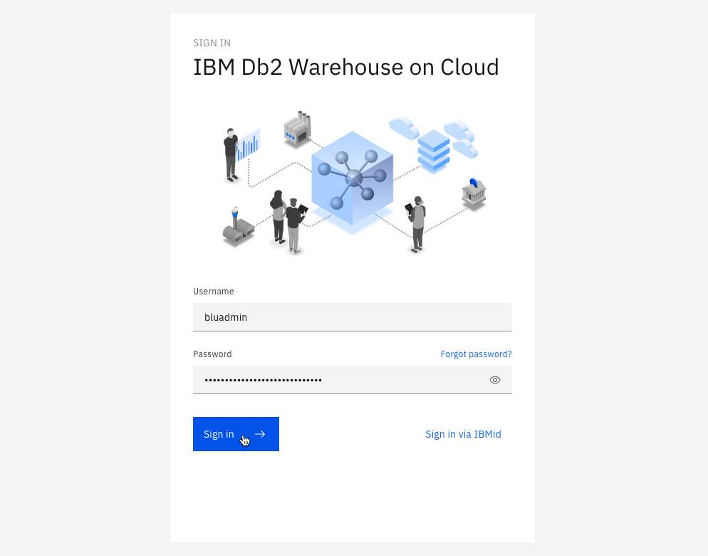 - Select
Datain the left menu followed by selecting theTablestab. Your table is located under the BLUADMIN Schema. To quickly find your table enter your surname used in naming the Device Type in the search field followed by pressingEnter. Selecting the BLUADMIN Schema should reveil your table asIOT_<Device Type Name>. 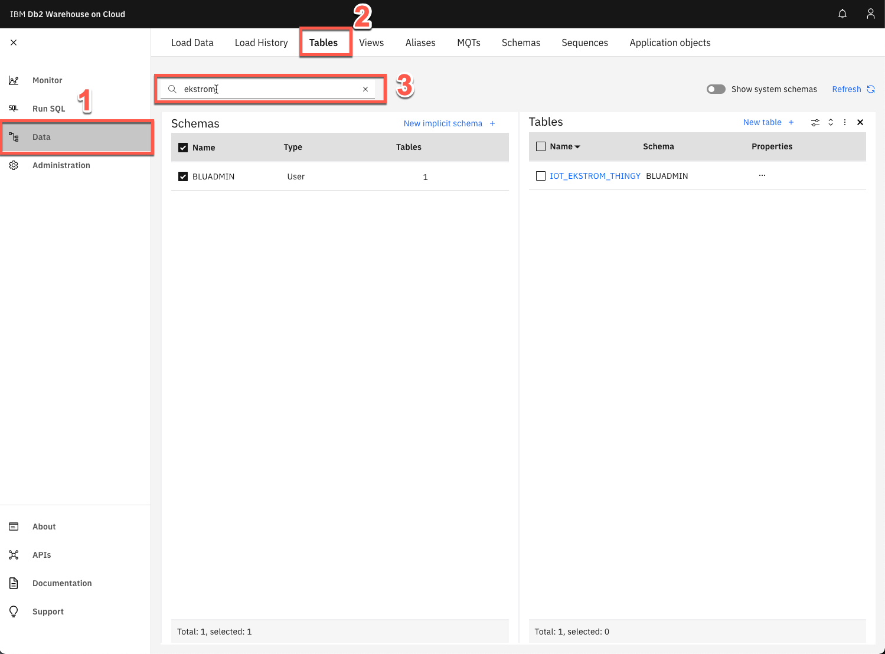 - Click on your
IOT_<Device Name>table and then click theView Databutton to see the data.
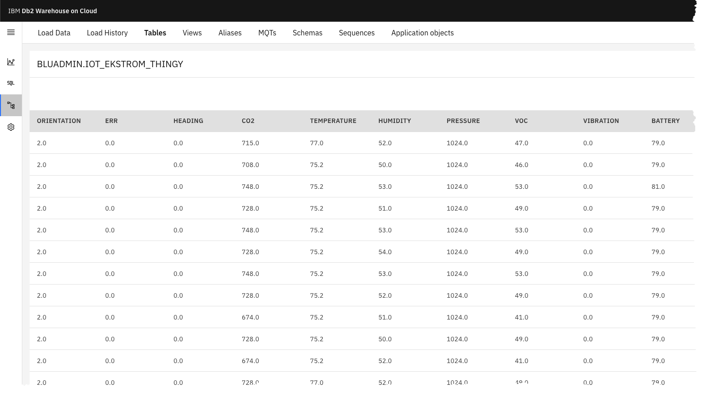
Congratulations you have successfully connected a device and have it sending and storing data in Maximo Asset Monitor. In the next Exercise you will view the available dashboards and create new dashboards to monitor your Thingy.